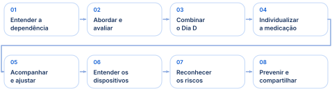
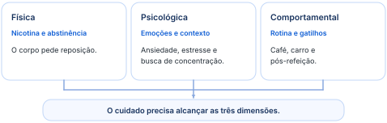
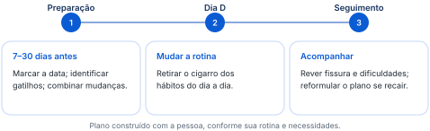
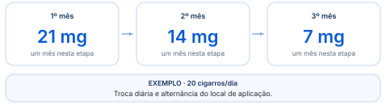
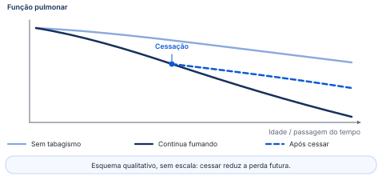
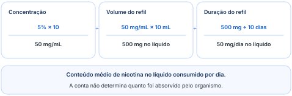

Da dependência à cessação: abordagem, tratamento e riscos dos novos produtos.
Entenda a dependência, organize o cuidado e revise as decisões que fazem diferença para o paciente.

Siga a trilha: entender o problema, combinar o cuidado e acompanhar a mudança.
A lógica do cuidado é entender por que a pessoa fuma, construir um plano que faça sentido para ela e acompanhar o que acontece depois. O medicamento é uma parte desse processo.
“Se você não tem tempo e paciência para escutar o tabagista, você não vai conseguir chegar a lugar nenhum.”
Parar de fumar envolve o que o corpo pede, o que a pessoa sente e o que ela se acostumou a fazer. Por isso, tratar só a nicotina deixa parte do problema sem cuidado.
O tabagismo é um transtorno crônico relacionado ao uso e à dependência de nicotina, associado à exposição a produtos inalados e a danos agudos e crônicos. A nicotina permanece no centro do problema, mesmo com a diversidade de produtos: cigarro convencional, narguilé, cigarros eletrônicos e outras formas de tabaco.
O dano não aparece apenas depois de muitos anos. Os cigarros eletrônicos também podem estar associados à lesão pulmonar aguda. Entre os danos de longo prazo estão câncer, infarto e doença pulmonar obstrutiva crônica.
Como dimensão do problema, o Dr. Cássio apresenta estimativas de 1,2 bilhão de pessoas que fumam, mais de 7 milhões de mortes relacionadas ao tabagismo e 1,5 milhão relacionadas à exposição passiva. A carga de doença vai além do pulmão e inclui alterações cardíacas e vasculares.

Na dimensão física, a nicotina chega rapidamente ao cérebro — cerca de 4 segundos, na explicação do Dr. Cássio — e ativa receptores ligados à sensação de recompensa. Quando o efeito passa, surge a busca por nova exposição.
A dimensão psicológica aparece na relação do cigarro com ansiedade, estresse, concentração e emoções. A pessoa pode associá-lo tanto a um momento difícil quanto a uma comemoração.
A dimensão comportamental é sustentada pela repetição: entrar no carro, terminar o almoço, tomar café ou ir à padaria passam a lembrar o cigarro. Essa parte pode ser esquecida tanto pelo paciente quanto pelo médico, embora seja decisiva para romper a associação com a rotina.
“Como é que eu vou tirar o meu cigarro do meu dia a dia se eu fizer as mesmas coisas na minha rotina de sempre?”
Achar que tratar a nicotina resolve tudo. A rotina e a relação emocional com o cigarro também precisam entrar no plano.
Toda consulta pode abrir espaço para ajudar quem fuma. Antes de combinar o tratamento, é preciso entender a vontade de parar, as dificuldades e as tentativas anteriores.
Todo usuário deve ser abordado, mesmo quando ainda não está pronto para parar. O objetivo é oferecer ajuda e explicar benefícios, sem impor uma decisão nem transformar a consulta em repreensão. Uma consulta por tosse ou por outro motivo também pode abrir essa conversa.
“Eu posso te ajudar a parar se você quiser.”
A sequência organiza o cuidado sem transformar a consulta em um roteiro rígido. Duas perguntas orientam o início: “Você quer parar?” e “Este é um bom momento para você?”. Um paciente motivado, mas vivendo demissões e insegurança no trabalho, pode precisar de um plano que leve esse contexto em conta.
Também é necessário diferenciar quem não consegue interromper o uso de quem para, mas volta depois. Nesse segundo cenário, o plano precisa dar atenção especial à manutenção da cessação e aos gatilhos da recaída.
Tratar a ambivalência como falta de vontade ou de caráter. O tabagismo é uma doença, e a dependência tem componentes físicos, psicológicos e comportamentais.
O teste ajuda a avaliar a dependência de nicotina. Duas perguntas têm especial importância clínica: quanto tempo passa até o primeiro cigarro ao acordar e quantos cigarros a pessoa fuma por dia.
Faixas iniciais da classificação: o escore é parte da avaliação, não uma decisão de tratamento isolada.
O resultado precisa ser interpretado junto do padrão atual de uso, da história de abstinência e das tentativas anteriores: o que a pessoa sentiu, por que voltou e o que atrapalhou o tratamento. O instrumento integra a avaliação do tabagismo, mas não substitui a história clínica.
“Existe uma doença que é tabagismo e a gente precisa tratar você.”
O plano precisa caber na vida da pessoa. Marcar uma data, reconhecer os gatilhos e mudar a rotina ajuda a tirar o cigarro dos momentos em que ele aparecia automaticamente.
Os dois eixos do tratamento são o apoio comportamental e o tratamento farmacológico. Para a prova, adote a expressão apoio comportamental, como orientado pelo Dr. Cássio. A associação com medicação, quando indicada, é mais eficaz do que cada abordagem isolada.
“Tirei na nossa prova o “cognitivo” porque senão fica um negócio muito psicológico.”
Esse apoio inclui aconselhamento estruturado, identificação de gatilhos, estratégias para lidar com eles, plano de cessação e prevenção de recaídas. Há quem pare sozinho ou com apenas uma das abordagens; a escolha precisa considerar a pessoa, sem perder de vista o benefício da combinação.
A anamnese explora onde e quando a pessoa fuma, há quanto tempo, se outras pessoas em casa fumam, o que já tentou e como foram as experiências anteriores. A preparação se organiza em quatro medidas:

Entre os exemplos de preparação estão diminuir de 20 para 19, 18 e 17 cigarros, adiar um cigarro que não parece necessário ou não fumá-lo inteiro. Para o pod, a contagem é menos simples; uma possibilidade é reduzir de duas tragadas para uma. Essas estratégias preparam a cessação e precisam ser adaptadas a cada pessoa.
Esperar que apenas a medicação faça a pessoa parar de fumar. Ela ajuda com a abstinência e a fissura; a mudança de rotina e o acompanhamento continuam necessários.
Evite a palavra “vício”, por seu peso moral, e converse sobre hábito e dependência. Uma linguagem respeitosa não retira o caráter de doença nem a necessidade de cuidado.
“A gente não usa mais a palavra vício, a gente usa o hábito.”
A medicação pode aliviar o desconforto de ficar sem nicotina e a vontade de fumar. A escolha depende da história, dos riscos e das necessidades de cada pessoa.
Os critérios práticos enfatizados pelo Dr. Cássio são sintomas relevantes de abstinência, consumo maior que 5 cigarros por dia, primeiro cigarro em menos de 1 hora após acordar e Fagerström maior que 4. A decisão é individualizada, considerando preferências, contraindicações, comorbidades e tentativas anteriores.
O Dr. Cássio adota a prescrição para adultos e não utiliza medicação em menores de 18 anos, embora reconheça situações de exceção. Mesmo quem reduziu para 2 ou 3 cigarros por dia e não consegue cessar pode precisar de ajuda, como a goma em situações selecionadas. O número de cigarros não encerra a avaliação.
Adesivo e goma são as formas de reposição usadas como referência neste material. Pastilhas e spray nasal são outras apresentações mencionadas na prática do tratamento; a disponibilidade precisa ser confirmada para cada produto e local.
Para alguém que fuma 20 cigarros por dia, um exemplo de esquema é começar com 21 mg e reduzir a dose mês a mês, durante três meses. A lógica é repor nicotina enquanto a pessoa deixa de fumar e trabalha os componentes psicológicos e comportamentais.
A orientação do Dr. Cássio é aplicar o adesivo da cintura para cima, com troca diária e rodízio entre locais, considerando a absorção. Se aparecer vermelhidão, é preciso mudar de local; em caso de reação intensa ou persistente, a goma pode ser considerada como alternativa.

Exemplo para quem fuma 20 cigarros/dia; a escolha e os ajustes dependem da avaliação individual.
A goma de 2 mg permite uso pontual para a fissura. Entre os exemplos clínicos estão quem ainda fuma 1 ou 2 cigarros por dia e quem está há 5–7 dias sem fumar, mas apresenta vontade intensa. Nessa segunda situação, o Dr. Cássio prefere avaliar a goma antes de iniciar um adesivo, atento ao risco de náusea, tontura e mal-estar.
Na experiência clínica do Dr. Cássio, o alívio da fissura pode ocorrer em cerca de 5 minutos, e alguns pacientes utilizam 3–5 gomas por dia. A comparação informal de uma goma de 2 mg com dois cigarros ajuda a explicar o uso, mas não estabelece uma equivalência exata de absorção.
Um caso ilustra a revisão do tratamento: um médico continuava usando goma seis meses depois de parar, sem sentir vontade de fumar. Ao conversar sobre a necessidade real, percebeu que podia interromper esse uso. O ponto didático é reavaliar, não presumir a necessidade indefinida de reposição.
A bupropiona é um antidepressivo atípico com eficácia para cessação independente do efeito antidepressivo. Atua em vias dopaminérgicas e noradrenérgicas relacionadas à dependência e integra as opções de primeira linha indicadas pela Organização Mundial da Saúde.
História de crise convulsiva e traumatismo cranioencefálico são contraindicações destacadas pelo Dr. Cássio. Antes de prescrever, revise também interações que aumentem o risco de convulsão, o perfil clínico e as medicações em uso.
Liberação ao longo do dia. A escolha da formulação depende do esquema de tratamento prescrito.
Entre os nomes comerciais estão Zyban, Zetron, Wellbutrin e Bup. Ao selecionar o paciente, pergunte como ele ficou nas tentativas anteriores: irritabilidade e agitação merecem atenção, enquanto o relato de humor rebaixado leva a outra avaliação.
O Dr. Cássio teve uma experiência pessoal de agitação com a bupropiona. Seu aprendizado é considerar o perfil do paciente e observar a resposta, sem presumir que todos terão a mesma reação: a maioria de seus pacientes tolera bem o medicamento.
A sertralina não é um medicamento específico para cessação. Diante de ansiedade, depressão ou transtorno de déficit de atenção e hiperatividade, avalie a condição associada e considere o contato com o profissional que já acompanha a pessoa. Um clínico com competência para esse manejo pode avaliar e tratar a comorbidade; reconhecer quando buscar apoio especializado faz parte do cuidado.
“Eu é que não passo porque não é mais da minha área.”
Usar bupropiona automaticamente em qualquer pessoa ansiosa. Ela pode causar agitação; a escolha depende do perfil clínico e da revisão de riscos.
A vareniclina, lembrada pelo nome Champix, foi desenvolvida especificamente para a cessação. Liga-se ao receptor nicotínico alfa-4 beta-2 como agonista parcial: produz ativação parcial e reduz a ação reforçadora da nicotina quando a pessoa fuma.
A ideia é oferecer parte do estímulo e, ao mesmo tempo, reduzir a recompensa obtida ao fumar. A expressão “30%–40% do prazer”, usada pelo Dr. Cássio, é uma analogia para o agonismo parcial; não representa eficácia clínica ou ocupação dos receptores.
Como comparação ilustrativa, o Dr. Cássio apresenta valores aproximados de cessação de 17% com placebo, 30% com bupropiona e 47% com vareniclina. Em seu grupo, relata 90% de sucesso associando vareniclina e apoio comportamental.
“Eu paro de fumar; o que o remédio vai me ajudar? A não ter as crises de abstinência.”
Parar traz benefícios mesmo depois de muitos anos fumando. Se a pessoa voltar a fumar, é preciso entender o que aconteceu e ajustar o plano para a próxima tentativa.
Se a pessoa volta a fumar, o primeiro passo é entender o que aconteceu. Pergunte sobre fissura, álcool, estresse, festas e outros acontecimentos. Avalie quantos cigarros fumou e se voltou ao padrão anterior ou a uma quantidade menor.
“Recaída não é o fim do tratamento.”
Achar que parar apaga toda a perda pulmonar ou que a recaída representa fracasso moral. O benefício está em mudar a trajetória; o acompanhamento deve responder às dificuldades que surgem.
A função pulmonar diminui ao longo dos anos, mas o tabagismo acelera a perda. O Dr. Cássio utiliza a ideia de uma perda “três vezes maior” para destacar esse efeito. Ao cessar, a velocidade de perda volta a se aproximar da de quem não fuma; o que já se perdeu não é automaticamente recuperado.
Quanto mais cedo a pessoa para, maior o benefício acumulado. A redução de riscos cardiovasculares, respiratórios e oncológicos é progressiva. Na experiência de consultório do Dr. Cássio, a melhora da aparência pode ser percebida em cerca de 15 dias, embora esse prazo varie entre pessoas.
Em uma pessoa de 85 anos com doença pulmonar obstrutiva crônica, irritação brônquica, secreção e infecções de repetição precisam ser consideradas junto do conforto e dos objetivos de cuidado. A decisão exige ponderação compartilhada; a idade isolada não define quando parar deixa de valer a pena.

Esquema qualitativo: cessar modifica a trajetória de perda, sem recuperar automaticamente a função anterior.
A cessação beneficia também quem estava exposto à fumaça. Avisar a família ajuda a construir apoio durante a mudança: a irritabilidade não deve virar motivo para estimular o retorno ao cigarro.
Uma estimativa usada pelo Dr. Cássio é de 30% de recaída até nove meses. Sua orientação é acompanhar por 9 meses a 1 ano, buscando cessação sustentada, com prevenção e manejo de recaídas.
O pod produz um aerossol e pode concentrar muita nicotina. Para entender o consumo, peça a embalagem e verifique a concentração, o volume do refil e quanto tempo ele dura.
Vape, pod e cigarro eletrônico são formatos de dispositivos eletrônicos para fumar. Entre seus componentes estão bateria, sensor, reservatório e atomizador. A energia gera um aerossol a partir do produto utilizado; não se trata apenas de vapor de água.
Há apresentações com ou sem nicotina, sais de nicotina, refis aromatizados e produtos de tabaco aquecido. Design discreto, tecnologia, sabores, facilidade de uso, curiosidade e socialização ajudam a explicar o apelo entre jovens.
Ele permite formulações com concentrações elevadas e menor aspereza na boca e na garganta. Isso pode facilitar tragadas repetidas e mais profundas em alguns dispositivos. A sensação de menor irritação não significa menor risco.
A quantidade de nicotina e o padrão de exposição variam entre marcas, dispositivos e formas de uso. Na consulta, peça a caixa do produto, confira a concentração e o volume e pergunte quanto tempo o refil dura.
Na convenção usada no exemplo, multiplica-se a porcentagem por 10 para obter a concentração em mg/mL. Depois, multiplica-se pelo volume e divide-se pelos dias de duração:

O exemplo considera um refil de 10 mL a 5% que dura 10 dias. São 50 mg/mL, 500 mg no refil inteiro e 50 mg por dia no líquido consumido. O Dr. Cássio utiliza uma comparação aproximada com 2,5 maços por dia para tornar o consumo perceptível ao paciente.
Em consultas, o Dr. Cássio chegou a comparações com 3,5 e 7 maços ao discutir o consumo de pacientes. Entender a dimensão do uso ajudou algumas pessoas a decidir parar. A utilidade da conta é abrir essa conversa, sem reduzir todos os dispositivos à mesma equivalência.
Usar uma equivalência fixa sem conhecer concentração, volume e duração. Marcas, dispositivos e padrões de uso variam.
O aerossol pode conter partículas irritantes, aromatizantes e metais, com efeitos respiratórios e cardiovasculares. Os efeitos de longo prazo continuam sendo estudados.
No Brasil, são proibidas fabricação, importação, comercialização, distribuição, armazenamento, transporte e propaganda desses dispositivos. O uso em ambientes coletivos fechados, incluindo avião e ônibus, também é proibido.
Produtos inalados podem causar lesão pulmonar aguda grave. Uma estratégia de redução de danos usada em outro país não transforma qualquer vape em um medicamento aprovado.
Produtos inalados podem causar dano pulmonar agudo grave. Casos de jovens com opacidades intersticiais e alveolares extensas ilustram a importância de investigar a exposição a cigarros eletrônicos.
O dano pode envolver a membrana alvéolo-capilar. A lesão pulmonar associada ao uso desses produtos demonstra o risco agudo, mas não resume todos os efeitos possíveis dos dispositivos.
Em uma consulta, um paciente do Dr. Cássio usou a experiência inglesa como argumento de segurança. O aprendizado é distinguir regulamentação, redução de danos e ausência de risco: são questões diferentes.
Concluir que a liberação em outro país prova que não faz mal. Priorize tratamentos com eficácia e segurança estabelecidas; nenhum cigarro eletrônico é aprovado no Brasil para tratar tabagismo.
Cuidar do tabagismo também é evitar que outras pessoas comecem e proteger quem convive com a fumaça. Escutar, combinar mudanças e acompanhar faz parte do tratamento.
A publicidade antiga do cigarro e o apelo atual dos dispositivos compartilham elementos: glamour, status, socialização, design, tecnologia, sabores e baixa percepção de risco. O produto fica discreto e atraente, enquanto a dependência continua no centro do problema.
Para destacar o valor da ajuda, o Dr. Cássio utiliza uma comparação de 85% de pessoas que desejavam parar, 3% que conseguiam sozinhas e 60% com apoio. Esses percentuais ilustram seu argumento sobre a importância do cuidado; não representam uma promessa individual de resultado.
Na medicina centrada na pessoa, a mudança de hábito será feita por quem vive aquela rotina. O plano precisa de concordância, escuta e participação.
“É mudança de hábito de vida, e quem vai fazer é a pessoa, não é você; então ela precisa estar de acordo com aquilo que vai fazer.”
Revise na ordem da trilha: entender a dependência, planejar a cessação e acompanhar o cuidado. O selo PROVA destaca a orientação do professor.
Dependência. Física, psicológica e comportamental. A nicotina é central, mas a rotina também precisa mudar.
Avaliação. Perguntar, aconselhar, avaliar, ajudar e acompanhar. Faixas iniciais de Fagerström: 0–2 muito baixa; 3–4 baixa; 5 média. Sempre junto da história clínica.
Apoio comportamental PROVA. Expressão orientada pelo Dr. Cássio para a prova. Combinar Dia D entre 7 e 30 dias; reconhecer gatilhos, preparar a mudança e reorganizar a rotina.
Farmacoterapia. Abstinência relevante; >5 cigarros/dia; primeiro cigarro <1 hora; Fagerström >4. Individualizar. Na prática do Dr. Cássio, medicação apenas para adultos.
Reposição de nicotina. Exemplo: adesivo 21 mg, 14 mg e 7 mg, um mês em cada etapa, troca diária. Goma citada: 2 mg para situações de fissura. Não equivaler diretamente produtos.
Outros medicamentos. Bupropiona: história de convulsão e traumatismo craniano são contraindicações; revisar interações e agitação. A apresentação de 300 mg não define o início. Vareniclina: agonista parcial alfa-4 beta-2.
Seguimento. Recaída pede identificação de gatilhos e novo plano. Acompanhamento descrito: 9 meses a 1 ano. Parar reduz a velocidade de perda pulmonar; não apaga a perda anterior.
Conta do pod. 5% = 50 mg/mL; refil de 10 mL = 500 mg; duração de 10 dias = 50 mg/dia no líquido. A conta não determina dose absorvida nem equivalência exata com maços.
Riscos e prevenção. Aerossol não é vapor de água. Pode haver lesão pulmonar aguda grave. O dispositivo não é tratamento aprovado no Brasil. Prevenir o início, proteger da exposição passiva e apoiar a cessação.
Doses e critérios precisam ser interpretados junto da avaliação individual. Consulte os capítulos para as diferenças entre apresentações e as referências complementares.
Leituras de apoio aos esclarecimentos clínicos destacados em roxo.